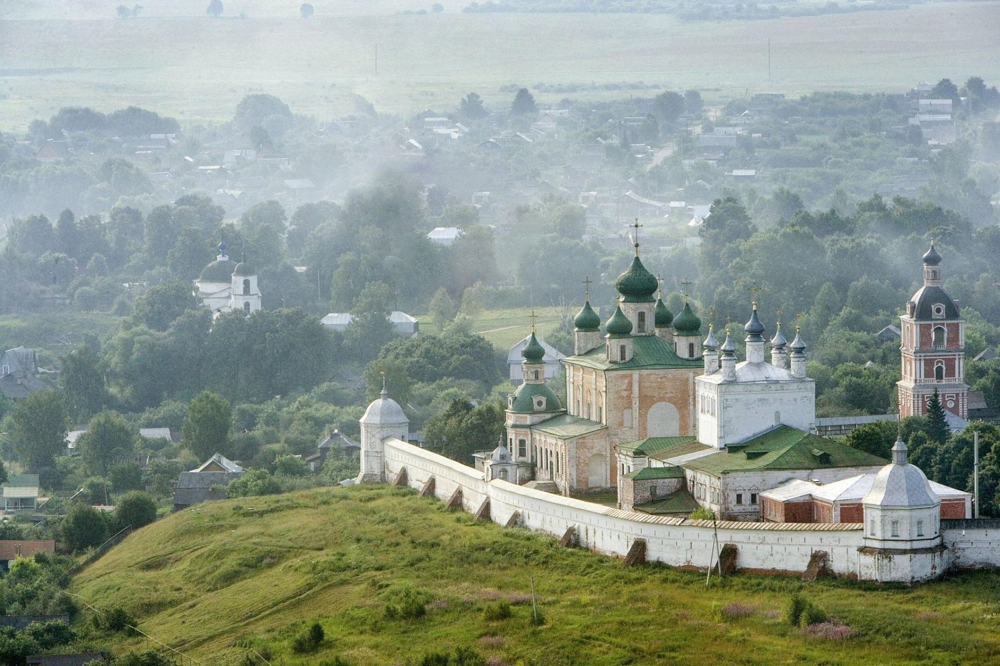
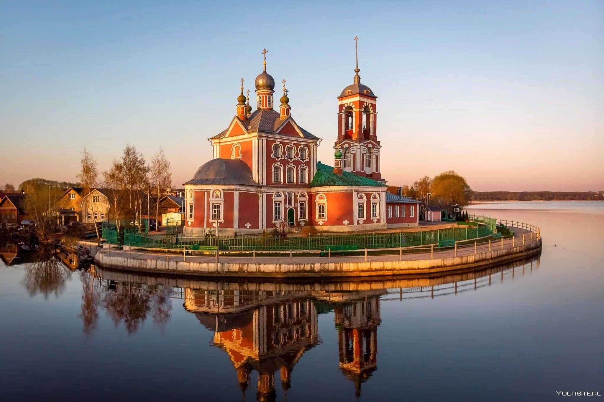
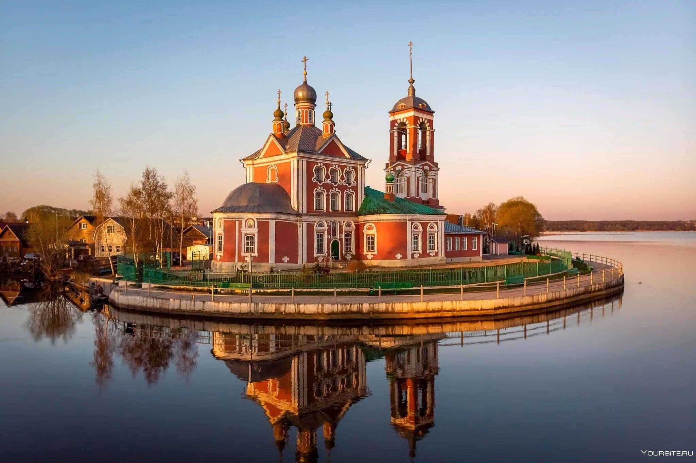
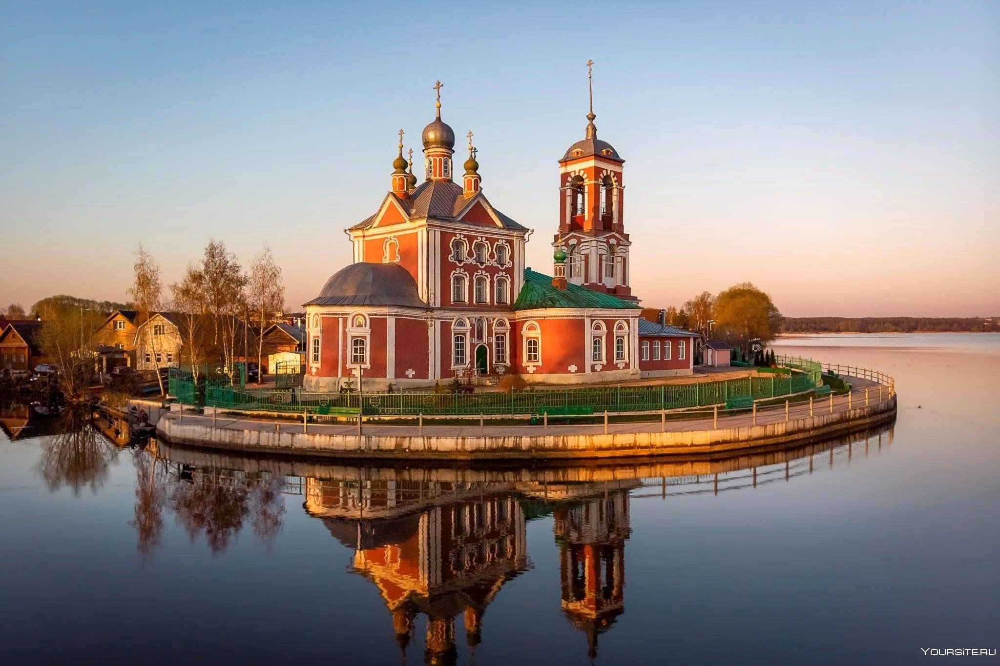
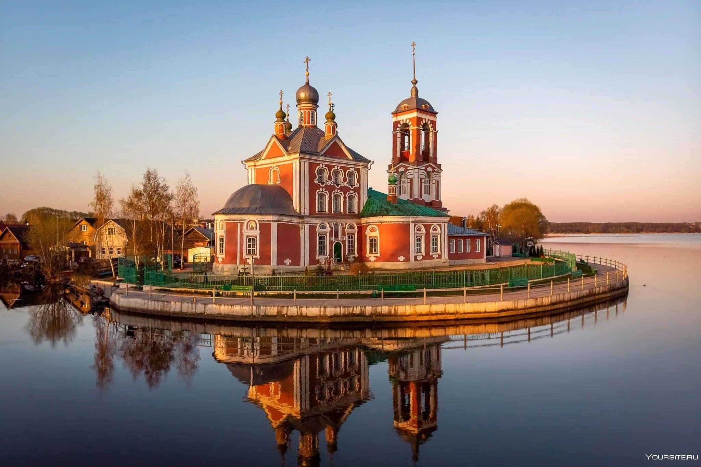

 




Пересла́вль-Зале́сский (часто просто Пересла́вль) — город (с 1152 года) в Ярославской области России. Население — 37 738 чел. (2021). Площадь города составляет 23,01 км². Административный центр Переславского района, в который не входит, обладая статусом города областного значения. В границах этого района в рамках муниципального устройства с 2018 года он образует городской округ город Переславль-Залесский. Спасо-Преображенский собор Никольский собор Университет Переславля, первый корпус Переславский музей (вид с колокольни) Город расположен в 140 км от Москвы, на трассе М8 «Холмогоры» Москва — Архангельск, примерно посередине пути из Москвы в Ярославль, на берегу Плещеева озера, в месте впадения в него реки Трубеж. Также имеет прямое транспортное сообщение с Вологдой и подъезды к Владимиру, Костроме, Иванову и Твери. Центр национального парка «Плещеево озеро». Километровый знак «140 км» находится в центре города на повороте с улицы Свободы на Ростовскую улицу. В городе расположена железнодорожная станция Переславль, конечная железнодорожной линии от станции Берендеево. Переславль входит в Золотое кольцо России. В список городов этого туристического маршрута Переславль был включён Бычковым Юрием Александровичем, придумавшим «Золотое кольцо». В 2009 году город посетило 290 тысяч человек, 91 % из которых прибыли сюда на экскурсию. При этом 2 % туристов (6 тысяч человек) составили иностранцы.
Некоторые достопримечательности Переславля-Залесского: